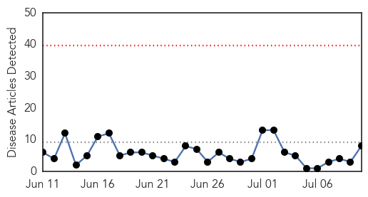
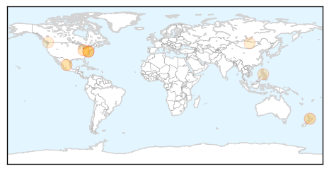
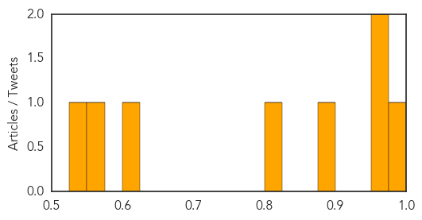

Mold/Fungal
30-Day Web Trend
0 alerts, 0 warnings
30-Day Twitter Trend
0 alerts, 0 warnings

Article Locations

Article Confidences

Top Articles:
-
No articles found for Jul 10, 2014
Top Tweets:
-
No tweets found for Jul 10, 2014
Measles
30-Day Web Trend
0 alerts, 0 warnings

30-Day Twitter Trend
0 alerts, 0 warnings

Article Locations
Article Confidences
Top Articles:
- 0.980
- Measles linked to Auckland strain
- 0.972
- Outbreaks of Measles: Should We Be Concerned
- 0.968
- Department of Health - Enumclaw Courier-Herald
- 0.892
- Measles cases hit 18-year high in Washington state
- 0.824
- Is the Ohio measles outbreak nearly over?
- 0.624
- ABC News (Australian Broadcasting Corporation)
- 0.551
- Mongolia certified measles free - Mongolia
- 0.541
- Lower Mainland hospitals among worst in Canada
Top Tweets:
-
No tweets found for Jul 10, 2014